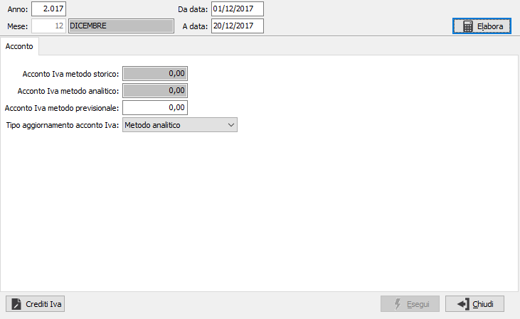

Calcolo acconto Iva
La procedura consente di effettuare il calcolo dell’acconto Iva di dicembre sulla base della normativa attualmente in vigore. E’ possibile scegliere se utilizzare il metodo storico, il metodo analitico, oppure il metodo previsionale e se effettuare l'aggiornamento dei progressivi Iva generali.

Inseriti i parametri principali, anno, data inizio e fine elaborazione, già proposti automaticamente, occorre premere il pulsante Elabora per avviare l’elaborazione. Al termine dell'elaborazione, in base ai dati presenti, saranno calcolati i valori di acconto secondo i metodi visualizzati:
metodo storico: applica la percentuale di acconto, presente sui protocolli Iva, al totale Iva a debito risultante dalla liquidazione Iva dell'ultimo periodo (Dicembre o IV trimestre) dell'anno precedente.
metodo previsionale: non viene calcolato, ma deve essere inserito dall'utente.
metodo analitico: è il valore risultante dalla liquidazione Iva calcolata in base al periodo impostato nei limiti di selezione.
Per procedere all'aggiornamento del valore dell'acconto sui protocolli generali occorre selezionare mediante l'apposita casella il tipo di valore dell'acconto da aggiornare (metodo storico, analitico o previsionale) e premere il bottone Esegui, che sarà attivo solo dopo aver effettuato l'elaborazione.